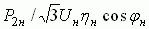

ЗАДАНИЯ И МЕТОДИЧЕСКИЕ УКАЗАНИЯ К ИХ ВЫПОЛНЕНИЮ
Задание 1. Согласно варианту N выбрать тип двигателя (для нечетных вариантов из табл. 1 (АД с короткозамкнутым ротором), а для четных - из табл. 2 (АД с фазным ротором), где N – номер записи фамилии студента в учебном журнале группы), записать (с экрана дисплея) в отчёт его номинальные данные:

для АД с КЗ ротором:
номинальную механическую мощность Рн = Р2н на валу, номинальную частоту вращения вала nн, номинальный КПД ηн, номинальный коэффициент мощности cosφн, отношения: пускового тока к номинальному Iп/Iн, пускового момента к номинальному Мп/Мн, максимального момента к номинальному Мmax/Мн, момент инерции привода J, приведенный к валу АД, линейное напряжение сети Uн и его частоту f1, номинальный ток Iн =  (Р2н в Вт), схему соединения обмоток статора (звезда Y или треугольник Δ);
для АД с фазным ротором:
номинальную механическую мощность Рн = Р2н на валу, номинальную частоту вращения вала nн, номинальный КПД ηн, номинальный коэффициент мощности cosφн, номинальное скольжение Sн (в %), отношение максимального момента к номинальному Мmax/Мн, ток ротора при номинальном скольжении I2н, напряжение между кольцами разомкнутой обмотки ротора U2л, частота напряжения сети f1, линейное напряжение сети Uн, момент инерции привода J, приведенный к валу АД, схему соединения обмоток статора и ротора (звезда).